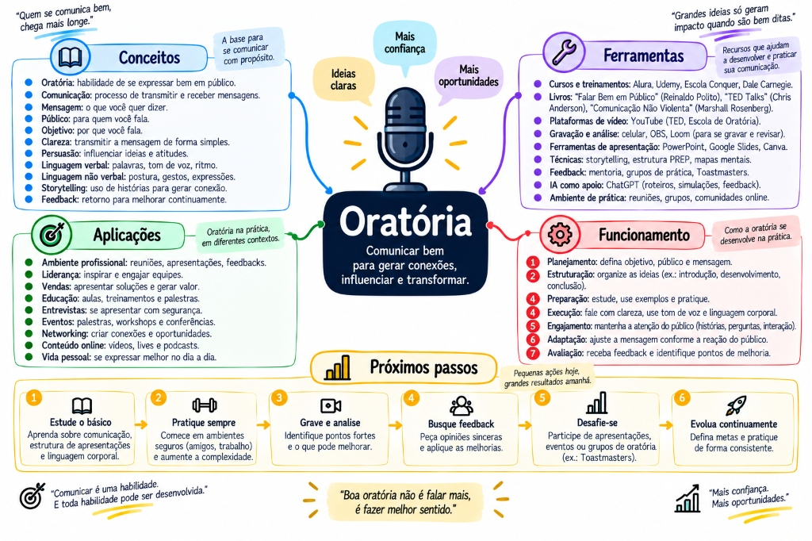

O décimo terceiro documento, e a camada que faz os outros doze pagarem. O acervo inteiro é sobre saber; este é sobre transmitir — e a diferença entre os dois é onde muita carreira trava. O próprio material que você já tem aponta para cá: o de Arquitetura termina em "comunicar a decisão: o trabalho que faz a arquitetura acontecer", e o de System Design lista, entre os erros que eliminam candidato, pensar sem narrar. Em cima, a trilha visual: 33 nós em 9 marcos. Embaixo, o conteúdo: 13 tópicos em 9 partes, cobrindo os fundamentos, PREP, CNV, a decisão técnica no trabalho, a entrevista, o palco, e a conversa difícil.

MAPA MENTAL PRINCIPALORATÓRIA — Comunicar bem para gerar conexões, influenciar e transformar
Com evidênciaReavaliação da ansiedade e exposição gradual têm estudo por trás, não só conselho.
Quatro contextosDecisão técnica, entrevista, palco e conversa difícil — cada um com o seu método.
Estrutura antes de slideQuem começa pelo slide já perdeu. A ordem correta é outra.
Ligado ao acervoADR, postmortem e System Design aparecem aqui do lado de quem fala.
↗
A trilha: do nervosismo à conversa difícil
Comece por aqui. Siga o caminho de cima para baixo, clique em qualquer nó para abrir o painel — e use o modo teste para revisar sem reler.
01
O corpo antes da fala
O nervosismo tem mecanismo — e duas intervenções com evidência, que não são "respira fundo e relaxa".
Reavaliar a ansiedade em vez de tentar acalmá-la
essencialcom evidência
Direto: dizer "estou empolgado" funciona melhor que tentar se acalmar. Ansiedade e empolgação produzem sintomas quase idênticos — a diferença está no rótulo, e o rótulo é escolha sua.
o caso
Cinco minutos antes de apresentar o desenho para o time, o coração acelera. Você tenta se acalmar, respira fundo, e o esforço de suprimir consome exatamente a atenção que você precisaria para falar.
A intervenção alternativa leva três segundos: "estou empolgado". Num estudo de Alison Wood Brooks (Harvard, 2014), participantes que renomearam a ativação como empolgação antes de falar em público apresentaram melhor e foram avaliados como mais persuasivos, confiantes e competentes.
≈
Analogia. É a mesma métrica com dois painéis. Uso de CPU em 80% pode ser "está saturando" ou "está trabalhando bem". O número é o mesmo; o que muda é o que você faz em seguida — e o rótulo é que decide.
Por que funciona
Ansiedade e empolgação compartilham quase toda a assinatura fisiológica: frequência cardíaca elevada, adrenalina, atenção aguçada. São estados de alta ativação. A diferença é a valência — ameaça ou oportunidade.
Ir de alta ativação negativa para calma é atravessar duas dimensões. Ir para alta ativação positiva é atravessar uma. O caminho mais curto ganha.
O que veio substituir: "respira fundo e relaxa", conselho bem-intencionado que pede o salto difícil. E pior: falhar em se acalmar vira evidência de que está ainda mais nervoso.
Como usar
Literalmente. Em voz baixa ou mentalmente, nos segundos antes: "estou empolgado". O estudo original usou exatamente isso, dito em voz alta.
Parece bobo. Funciona mesmo assim — e o constrangimento de dizer é menor que o de travar.
E a parte que a respiração realmente resolve: a ativação fisiológica cai com expiração mais longa que a inspiração, por cerca de um minuto. Isso tem base — o que não tem é respirar fundo e rápido, que aumenta a ativação. Se for usar respiração, use a lenta, e use junto com a reavaliação, não no lugar dela.
armadilhas
Tentar suprimir o nervosismo. Supressão consome recurso mental que você precisa para falar.
Interpretar o sintoma como sinal de despreparo. Quem se prepara também sente — a diferença é o que faz com isso.
Pedir desculpa pelo nervosismo. Dirige a atenção da plateia para o que ninguém tinha notado.
Imaginar a plateia sem roupa. Folclore. Adiciona uma tarefa cognitiva no pior momento.
pratique agoraNa próxima vez que sentir a ativação — reunião, ligação, qualquer coisa — diga "estou empolgado" antes de começar. Uma vez. E repare no que muda.
prova de domínioVocê explica por que "acalme-se" é um conselho pior que "fique empolgado" — usando a razão fisiológica, não a opinião.
Exposição gradual, e a gravação que ninguém assiste
essencial
Direto:a evitação é o que mantém o medo vivo. Cada repetição bem-sucedida ensina ao sistema nervoso que a ameaça foi superestimada — e a literatura aponta redução mensurável já em três a quatro sessões.
≈
Analogia. É o teste de carga. Você não descobre o limite do sistema evitando tráfego — descobre aplicando carga crescente em ambiente controlado. Cada rodada bem-sucedida vira evidência, e a evidência é o que substitui o medo por estimativa.
Os degraus, do mais protegido ao real: sozinho em voz alta → gravando e assistindo → para uma pessoa de confiança → para um grupo pequeno → o real. Cada um é confortável o bastante para você fazer, e desconfortável o bastante para produzir evidência.
O erro clássico é pular do ensaio mental direto para a apresentação. Os degraus do meio não são preparação opcional — são onde a evidência é coletada. Sem eles, você chega ao real com a mesma previsão catastrófica de sempre, porque nada a contradisse.
Sobre a gravação: é desconfortável nas primeiras vezes, e isso é esperado — você está vendo a diferença entre o que achou que fez e o que saiu. Assista uma vez procurando uma coisa só: o ritmo, ou as muletas, ou para onde você olha. Tentar corrigir tudo de uma vez não corrige nada. E gravar sem assistir transforma o exercício em teatro.
armadilhas
Ensaiar só mentalmente. A fala em voz alta usa musculatura e ritmo que o ensaio mental não treina — e é na voz alta que você descobre as frases que não fecham.
Decorar palavra por palavra. Cria um ponto único de falha: esqueceu uma frase, perdeu o fio inteiro. Decore a estrutura.
Ensaiar uma vez e achar suficiente. A primeira passada é para descobrir os buracos; a segunda é a que melhora.
pratique agoraGrave três minutos explicando qualquer coisa técnica que você domina. Assista hoje mesmo procurando só as muletas — "tipo", "então", "né". Não corrija mais nada.
prova de domínioVocê tem duas gravações do mesmo conteúdo, com uma semana de diferença, e consegue apontar o que melhorou.
02
Estrutura antes de slide
Quem abre o editor de slides primeiro já perdeu. A ferramenta convida a preencher, e preencher não é decidir.
A frase única — e três apoios, não sete
essencial
Direto: se não cabe numa frase, você ainda não decidiu o que dizer. E vai descobrir isso no meio da apresentação, na frente de todo mundo.
o caso
Você precisa apresentar a migração para mensageria. Abre o editor, faz quarenta slides bonitos, ensaia. No dia, alguém pergunta "mas por que agora?" — e você percebe que nunca respondeu isso, nem para si mesmo.
Os quarenta slides cobriam o assunto. Nenhum deles carregava a tese.
≈
Analogia. É escrever código antes de saber o requisito. Sai muito código, ele funciona, e resolve o problema errado. A frase única é o requisito da sua apresentação.
antes — assunto
"Vou falar sobre a migracao para mensageria."
Isso e um TEMA. Nao afirma nada,
nao pede nada, nao pode ser
discordado — e por isso tambem
nao pode ser aprovado.
depois — tese
"Devemos adotar outbox agora, porque a
duplicidade de cobranca ja aconteceu
duas vezes, e implementar custa duas
semanas."
Afirma, justifica e quantifica.
Da para discordar — logo, da para
concordar.
A frase não precisa ser dita em voz alta. Ela é o critério: todo slide, todo exemplo, toda digressão passa pelo teste de "isso sustenta a frase?". O que não sustenta, sai — e é essa poda que transforma quarenta slides em doze.
Depois da tese, três apoios. Não sete. Quem ouve retém a tese e, com sorte, dois ou três apoios; o resto não acrescenta, dilui. Cobrir muitos tópicos não demonstra profundidade — demonstra que você não escolheu.
armadilhas
Abrir o editor de slides primeiro. A ferramenta sugere preencher, e o preenchimento vira substituto do pensamento.
Tese vaga. "Precisamos melhorar a arquitetura" não é tese — não diz o que fazer nem por quê.
Sete apoios. Um deles seria lembrado se estivesse sozinho; sete garantem que nenhum será.
pratique agoraPegue a última apresentação que você fez e tente escrever a tese dela em uma frase, agora. Se não conseguir, você acabou de descobrir por que a reunião não decidiu nada.
prova de domínioVocê escreve a frase única antes de abrir qualquer ferramenta — e ela sobrevive ao ensaio sem mudar.
O slide é o último passo — e o tempo é restrição de projeto
execução
Direto: slide existe para mostrar o que não cabe na fala — um diagrama, um número, uma comparação. Se o slide tem o texto do que você vai dizer, ele compete com você. E a leitura ganha, porque é mais rápida.
≈
Analogia. É comentário de código que repete a linha. // incrementa o contador acima de i++ não acrescenta nada e ainda ocupa espaço. Slide que repete a fala é isso, projetado.
O teste é direto: se a plateia consegue entender o slide sem você, você virou narrador do próprio material. E se você precisa do slide para lembrar o que dizer, isso não é slide — são as suas anotações, e existe um campo próprio para elas.
Sobre o tempo: planeje para 80% do disponível. Os outros 20% vão embora com pergunta, problema técnico e digressão — sempre. Quem planeja para 100% corta no palco, e o corte no palco sempre sacrifica a conclusão, que era justamente a parte que importava. Ensaiar com cronômetro é o único jeito de saber, porque a estimativa de quanto tempo leva é sistematicamente otimista.
armadilhas
Ler o slide em voz alta. A forma mais eficiente de perder a plateia.
Usar o slide como roteiro. Para isso existem as anotações do apresentador.
Planejar para o tempo cheio. Garante conclusão atropelada.
Slide com tabela de dez linhas. Ninguém lê. Se o dado importa, mostre uma linha; se não importa, corte.
pratique agoraPegue o seu slide mais cheio e reduza a uma ideia. Depois ensaie os dois e compare qual você explica melhor — normalmente é o reduzido, porque o cheio te faz ler.
prova de domínioVocê apresenta 20 minutos com menos de dez slides, e nenhum deles tem parágrafo.
03
Defender uma decisão técnica
Onde este documento encontra o de Arquitetura — que termina exatamente aqui, em "comunicar a decisão".
A ordem que convence: restrição, opções, escolha, preço
essencialADR
Direto: quem começa pela solução obriga a plateia a avaliar sem contexto — e a reação natural é resistir. Quem começa pela restrição faz a plateia chegar sozinha ao conjunto de opções.
o caso
Você abre a reunião com "proponho adotar outbox". Antes da segunda frase, alguém pergunta "não dá para fazer mais simples?" e a conversa vira defesa.
A alternativa começa três passos antes: "hoje, quando a rede falha entre o commit e a publicação, o evento se perde — aconteceu duas vezes este ano". Agora todo mundo está no mesmo problema, e a proposta vira resposta a uma pergunta que a sala já tem.
≈
Analogia. É a diferença entre entregar o resultado e entregar o plano de execução. O número sozinho convida à desconfiança; o plano mostra por que aquele caminho foi escolhido, e a conclusão deixa de ser pedido de fé.
A ordem tem quatro partes, e a quarta é a que mais pesa:
Passo
O que dizer
1. Restrição
Qual problema real existia, com número se possível. Coloca todos no mesmo ponto de partida.
2. Opções
Duas ou três alternativas reais, com o critério de comparação explícito.
3. Escolha
Qual, e por quê — ancorado no critério do passo 2, não em preferência.
4. Preço
O que essa escolha custa. Sempre.
Por que o preço convence em vez de enfraquecer: quem nomeia o próprio custo parece dono da decisão; quem esconde parece vendedor. E há uma razão prática: o preço vai aparecer de qualquer jeito — ou você o nomeia agora, com contexto, ou alguém o descobre depois, sem contexto e com desconfiança.
E uma armadilha específica: apresentar uma opção só soa como decisão já tomada, e as pessoas resistem ao que não participaram. Mas apresentar uma alternativa obviamente ruim só para ter o que descartar é pior — todo mundo percebe, e você perde credibilidade nas duas.
onde a teoria moraADR, a régua de profundidade e o próprio tópico "comunicar a decisão: o trabalho que faz a arquitetura acontecer" estão em Arquitetura completo. Nomear o trade-off como parte da proposta está em System Design completo. Aqui é o lado de quem fala.
armadilhas
Começar pela solução. A plateia avalia sem contexto e resiste.
Omitir o preço. Parece vendedor, e o custo aparece depois pior.
Uma opção só. Soa como decisão fechada.
Alternativa de palha. Todo mundo percebe, e custa credibilidade.
pratique agoraPegue uma decisão técnica que você tomou este mês e escreva os quatro passos. Se travar no passo 4, você encontrou o que ainda não pensou.
prova de domínioVocê apresenta uma decisão e alguém que discordava no início concorda no fim — sem você ter subido o tom.
Trade-off para quem não é técnico — e o postmortem sem culpado
essencial
Direto: traduza o mecanismo em risco, custo e prazo. Simplificar é trocar o nível de detalhe — não a verdade.
para o time
"Implementar transactional outbox com
relay e publisher confirms, e inbox
com unique(event_id) no consumidor."
para quem aprova orçamento
"Hoje, quando a rede falha no momento
errado, o cliente pode ser cobrado duas
vezes — ja aconteceu duas vezes este ano.
A correcao custa duas semanas e adia X.
Sem ela, o risco continua e cresce junto
com o volume."
Mesmo conteúdo, outro nível de detalhe, nenhuma mentira. O erro que estraga isso é simplificar até virar imprecisão — dizer "vai ficar mais rápido" quando o ganho é de confiabilidade, ou prometer que "resolve o problema" quando reduz a probabilidade. Quem aprova orçamento lembra da promessa.
E o postmortem, que é a apresentação mais difícil do trabalho técnico: o formato decide o resultado. A regra é simples de enunciar e difícil de cumprir — nenhuma frase nomeia pessoa como causa.
"Quem fez o deploy?"
Encerra a investigação. A partir daqui, todo mundo protege a própria versão.
"O que permitiu que um deploy causasse isso?"
Abre a investigação. A resposta é sobre o sistema, e o sistema é o que dá para consertar.
Por que isso não é gentileza, é eficácia: quando há culpado, as pessoas param de contar o que realmente aconteceu — e você perde justamente a informação de que precisa. A estrutura que funciona é a mesma da investigação técnica: linha do tempo, que sinal existia, que decisão foi tomada com a informação disponível naquela hora, e o que faltava para decidir melhor.
onde a teoria moraObservabilidade, o método de cinco passos e o runbook estão em Conceitos de Backend completo. A sala de incidente — hipótese, correlação, evidência — está em Spring completo. Aqui é como conduzir a conversa.
armadilhas
Simplificar até virar mentira. Troque o detalhe, nunca a verdade.
Usar jargão com quem aprova. Não impressiona; afasta.
Prometer resolução total. Diga "reduz o risco de X para Y", não "resolve".
Postmortem com nome. Uma vez que aparece, ninguém mais conta o que sabe.
pratique agoraPegue o último incidente e reescreva a causa sem citar pessoa nenhuma. Se não conseguir, a análise ainda não chegou à causa real.
prova de domínioVocê explica um trade-off técnico para alguém de negócio e a pessoa consegue repetir o raciocínio para outra.
04
A entrevista é uma prova oral
Especialmente a de System Design — em que o desenho certo, não narrado, vale zero.
Narrar enquanto pensa
essencialSystem Design
Direto: o entrevistador avalia o processo, e processo que não é narrado não existe para ele. Trinta segundos de silêncio custam mais que uma hipótese descartada em voz alta.
≈
Analogia. É o processo que não emite log. Pode estar trabalhando perfeitamente; de fora, é indistinguível de travado. Narrar é o stdout do seu raciocínio — e sem ele, quem observa só tem o silêncio para interpretar.
O documento de System Design já lista pensar sem narrar entre os erros que eliminam candidato. Aqui está o conserto, e ele é mecânico: frases de transição que compram tempo enquanto sinalizam que há raciocínio em curso.
"Deixa eu pensar em voz alta."
Abre a narração. Autoriza você a dizer coisas incompletas sem que pareçam respostas erradas.
"Meu primeiro instinto é X, mas isso implicaria Y — então talvez Z."
Mostra o descarte. Considerar e rejeitar uma opção vale mais que acertar de primeira sem explicar.
"Vou começar pelo simples e aumentar a complexidade conforme a gente conversa."
Condução. Você definiu o roteiro, e ninguém vai achar que você está sendo simplista.
E perguntar é a primeira resposta, não um preâmbulo. Converter o enunciado vago em requisito — contrato, workload, gargalo — é bom método e boa oratória ao mesmo tempo: demonstra senioridade e compra os segundos que você precisa para organizar. Duas ou três perguntas bastam; mais que isso vira fuga.
O detalhe que separa quem pergunta de verdade de quem cumpre protocolo: usar a resposta explicitamente. "Como você disse que leitura domina, vou priorizar o caminho de leitura" mostra que a pergunta não era ritual.
onde a teoria moraO método, as perguntas de carga e a escada de decisão estão em System Design completo — aqui eles viram roteiro de fala. As mesmas frases em inglês, com o vocabulário de reunião, estão em Inglês técnico completo.
armadilhas
Silêncio para montar a resposta perfeita. Interpretado como não saber.
Perguntar e não usar a resposta. Revela que era protocolo.
Narrar só o que deu certo. O descarte é metade da evidência de raciocínio.
pratique agoraGrave cinco minutos resolvendo um problema de System Design em voz alta, sozinho, sem parar. Ouça e conte quantas vezes você ficou em silêncio mais de cinco segundos.
prova de domínioVocê narra um raciocínio incompleto sem desconforto — inclusive as hipóteses que vai abandonar.
A pergunta hostil e a que você não sabe responder
pressão
Direto: na hostil, não defenda por reflexo — reconheça a parte válida e mantenha o núcleo. Na que não sabe, diga que não sabe e mostre como descobriria. Inventar é o único caminho que fecha portas.
o caso
Você apresenta o desenho e o entrevistador diz, seco: "isso não escala".
A reação instintiva é defender tudo. Mas a frase não é uma refutação — é um teste. Ele quer ver se você sustenta a posição com critério ou desmorona. E, em alguns casos, ele está certo e quer saber se você percebe.
≈
Analogia. É um relatório de bug sem passos de reprodução. A resposta certa não é "funciona na minha máquina" nem "vou reescrever tudo" — é pedir a condição específica em que falha.
antes — defesa reflexa
— "Isso nao escala."
— "Escala sim, o Postgres aguenta
tranquilo, eu ja usei isso em
producao e nunca deu problema."
Voce nao perguntou em que cenario.
Agora e a sua palavra contra a dele —
e ele conduz a entrevista.
depois — critério
— "Isso nao escala."
— "Em que cenario, especificamente?
Se for acima de N por segundo,
concordo — e ai a saida seria X.
Abaixo disso, o custo de X nao se
paga, e por isso escolhi o simples."
Voce nomeou o limite. Agora a conversa
e sobre numero, nao sobre quem tem razao.
E a que você não sabe. Existe uma resposta que funciona e não é "não sei" seco:
"Não sei, e prefiro não chutar. Eu descobriria medindo Y com uma carga de Z. Mas posso raciocinar sobre as possibilidades, se ajudar."
E aí raciocine. O "não sei" isolado encerra; o "não sei, mas eis como eu descobriria" demonstra método — que é justamente o que está sendo avaliado.
E conduzir o tempo é sua responsabilidade também. Quarenta e cinco minutos são seus: sinalize etapas, avise quando vai aprofundar, e ofereça escolha — "vou desenhar o básico primeiro e depois aprofundo onde você preferir". Esperar ser conduzido é como acabar a entrevista sem ter chegado à parte que você domina, e lamentar que "não deu tempo".
armadilhas
Tratar discordância como ataque. Endurecer é o sinal mais claro de insegurança.
Inventar. Um chute detectado contamina tudo que você disse antes.
Concordar com tudo para agradar. Mostra que você não tinha critério.
Parar no "não sei". A segunda metade da frase é a que conta.
pratique agoraPeça a alguém que conteste uma decisão técnica sua com uma frase seca. Pratique responder pedindo o cenário específico, sem defender nada antes.
prova de domínioVocê diz "não sei" numa entrevista e a conversa melhora em vez de esfriar.
05
O palco
Meetup, palestra e vídeo. E o degrau que quase todo mundo pula na hora de começar.
Abertura, uma ideia só, e começar pequeno
essencial
Direto: os primeiros trinta segundos decidem a atenção do resto. Gastá-los com "bom dia, meu nome é, a agenda é" é usar o momento de maior atenção com o que menos importa.
antes — protocolo
"Bom dia, meu nome e X, trabalho na Y ha
tres anos, e hoje vou falar sobre
mensageria. A agenda e: primeiro um
pouco de teoria, depois..."
Trinta segundos gastos. Ninguem ainda
sabe por que deveria prestar atencao.
depois — problema
"Dois clientes foram cobrados duas vezes
no mesmo mes.
O codigo estava certo. O banco estava
certo. Os testes passaram.
Vou mostrar onde estava o problema."
O nome vem depois, em cinco segundos.
Uma ideia por palestra. Palestra não comporta a densidade de um documento — se você transformar 25 tópicos em 40 slides, ninguém sai com nada. Escolha uma ideia, sustente bem, e deixe o resto no repositório e no texto que você linka no final. Ser lembrado por uma coisa vale mais que ter coberto muito.
Vídeo é outro formato. Sem retorno ao vivo, a edição substitui a leitura da sala, e o ritmo precisa ser mais rápido — pausas que funcionam no palco parecem lentidão na gravação. Em compensação, você pode refazer, e a segunda gravação é quase sempre substancialmente melhor. Tentar acertar de primeira e publicar a primeira tomada desperdiça a única vantagem do formato.
E o degrau que todo mundo pula: esperar "ter algo digno de conferência". A ordem correta é a exposição gradual do marco 01 aplicada ao palco — apresente primeiro para o time, depois para a empresa, depois num meetup local. Falar internamente já é palestra, é o degrau mais fácil de conseguir, e é a prática que produz o material — não o contrário.
armadilhas
Abrir pedindo desculpa. Pelo nervosismo, pelo inglês, pelo slide — você dirigiu a atenção para o defeito.
Agenda no primeiro slide. Ninguém decide prestar atenção por causa de uma agenda.
Resumir um documento inteiro. Densidade de leitura não sobrevive à escuta.
Esperar o convite. Meetup local aceita proposta; empresa aceita ainda mais fácil.
pratique agoraEscreva a abertura de trinta segundos de uma palestra que você daria sobre algo do acervo. Sem o seu nome, sem agenda — só o problema.
prova de domínioVocê apresentou internamente para o time pelo menos uma vez, gravou, e assistiu.
06
A conversa difícil
Dar retorno, discordar de quem decide, e receber crítica — a metade que ninguém treina.
SBI: fato antes de julgamento
essencialmodelo
Direto:Situação, Comportamento, Impacto. O modelo do Center for Creative Leadership mantém a conversa no observável — e o observável não é discutível.
o caso
Um colega comenta "isso está errado" em quatro pontos do seu PR, sem explicar. Você passa a tarde adivinhando o que mudar e não pergunta, para não parecer perdido.
Você quer dar esse retorno. A versão que sai naturalmente é "você é muito duro nas revisões" — e essa frase transforma a conversa num debate sobre quem ele é.
≈
Analogia. É a diferença entre um relatório de bug e uma reclamação. "O sistema é lento" gera defesa. "Na página de pedidos, com filtro de data, o carregamento leva 12 segundos — medi três vezes" gera investigação. Retorno é relatório de bug sobre comportamento.
antes — julgamento
"Voce e muito duro nas revisoes."
O outro defende o carater.
A conversa morre, e nada muda —
porque nao ficou claro o que mudar.
depois — SBI
S: "Na review do PR 412, ontem de manha,"
B: "voce comentou 'isso esta errado' em
quatro pontos, sem explicar o porque,"
I: "e eu passei a tarde tentando adivinhar
o que mudar. Acabei nao perguntando
para nao parecer perdido."
Nada aqui e discutivel. Aconteceu.
Repare no que não está ali: nenhum "você é", nenhuma generalização, nenhum adjetivo sobre a pessoa. Só quando, o quê, e o efeito — e o efeito é sobre você, que é a única coisa sobre a qual você tem autoridade total.
E o quarto passo, que quase ninguém dá:perguntar a intenção. "O que você tinha em mente naqueles comentários?" Na esmagadora maioria dos casos, a intenção era boa e o impacto foi ruim — e separar as duas coisas abre espaço para a pessoa explicar sem se defender. Frequentemente revela um mal-entendido em vez de um conflito. Ir à conversa com a interpretação já fechada transforma a "conversa" num veredito.
armadilhas
Pular direto para o impacto. Sem situação e comportamento, soa como acusação genérica.
Adjetivo sobre a pessoa. "Agressivo", "desorganizado" — tudo isso é discutível e leva à defesa.
Guardar por semanas. O retorno perde precisão e ganha carga emocional.
Sanduíche de elogio. Todo mundo já sabe que o recheio é a crítica; o elogio em volta só a desvaloriza.
pratique agoraEscreva um retorno que você vem adiando, no formato SBI, com a pergunta de intenção no fim. Escrever já muda como você vai falar.
prova de domínioVocê dá um retorno difícil e a pessoa responde explicando a intenção — em vez de se defender.
Discordar de quem decide — e receber crítica
essencial
Direto: três movimentos para discordar sem virar oposição — mostrar que entendeu, ancorar no risco concreto, e oferecer um teste que resolve com dado. E um quarto: discordar e comprometer-se.
o caso
Seu gestor quer entregar na sexta. Você sabe que sem o índice a consulta leva 4 segundos, e não sabe o que acontece com o tráfego do lançamento.
Repetir "não dá" mais alto não funciona. O que funciona é transformar a discordância em medição.
"Deixa eu ver se entendi a sua posicao: voce quer entregar
na sexta porque o cliente ja foi avisado. Faz sentido.
O risco que eu vejo e concreto: sem o indice, a consulta
leva 4 segundos com o volume atual — medi ontem. Na sexta,
com o trafego do lancamento, eu nao sei o que acontece.
Proposta: eu meco com carga hoje a tarde. Se aguentar,
entrego na sexta sem reclamar. Se nao, a gente decide
com o numero na mao."
Os três movimentos estão todos ali. Explicitar que entendeu desarma — a outra pessoa para de repetir o argumento dela. Ancorar no risco concreto e medido tira a conversa do campo da preferência. Oferecer o teste transforma um impasse em uma tarefa de três horas.
E o quarto movimento, que é o mais adulto:discordar e comprometer-se. Se a decisão for entregar mesmo assim, registre a divergência — por escrito, sem drama — e entregue bem. Sabotar passivamente o que foi decidido é o que realmente queima capital político, muito mais que discordar em voz alta. E se você estava certo, o registro fala por si depois; se estava errado, ninguém vai cobrar.
Receber crítica é a metade que ninguém treina — e é o que faz as pessoas continuarem te dando retorno, que é o insumo de toda melhoria. Três passos: ouvir até o fim sem interromper, fazer uma pergunta de esclarecimento, e agradecer antes de responder — mesmo discordando.
Explicar imediatamente é o erro padrão: a explicação soa como defesa, e a pessoa aprende que dar retorno a você custa caro. Se a crítica for injusta, você pode dizer isso depois, com calma, e vai ser ouvido melhor.
armadilhas
Repetir o mesmo argumento mais alto. Se não convenceu duas vezes, o problema não é volume.
Discordar sem oferecer caminho. Vira obstáculo, não contribuição.
Sabotar passivamente o que foi decidido. O que mais custa reputação.
Explicar antes de agradecer. Fecha o canal de retorno para sempre.
pratique agoraNa próxima crítica que receber, faça só isto: ouça até o fim, pergunte uma coisa, agradeça. Responda depois — ou no dia seguinte.
prova de domínioVocê discordou de uma decisão, ela foi tomada contra você, e você a executou bem — com a divergência registrada.
07
A reunião
Participar, conduzir, e os trinta segundos finais que evitam duas semanas.
Tomar a vez, conduzir e recapitular
essencial
Direto: a vez é tomada, não concedida. A pausa educada não vem — e esperar por ela costuma significar sair da reunião com a objeção não dita.
≈
Analogia. É esperar o pool de conexões esvaziar sozinho. Não esvazia — tem sempre alguém pedindo. Ou você entra com estratégia, ou fica fora.
Frases de entrada fazem duas coisas ao mesmo tempo: sinalizam que você vai falar e compram o segundo que você precisa. "Posso entrar aqui?", "complementando o que a Ana disse", "um comentário rápido sobre isso". E o erro que anula tudo: montar a frase inteira antes de abrir a boca — quando você termina de montar, o assunto mudou. Comece pela frase de entrada e monte o resto falando.
Conduzir é falar menos. Facilitar uma reunião é garantir que a decisão saia, não apresentar. Abra com objetivo e tempo, chame quem não falou, e feche recapitulando. Se quem convocou falou 80% do tempo, não era reunião — era comunicado, e podia ter sido uma mensagem.
Os trinta segundos que mais rendem em qualquer reunião: recapitular no fim, em voz alta — o que foi decidido, quem faz, até quando. É onde o mal-entendido aparece, e ali ele é barato. Confiar na ata escrita depois não funciona: quem leu a ata já tinha entendido, e quem entendeu errado não vai reler. É a mesma técnica da confirmação de nível 3 do documento de inglês, aplicada ao grupo.
o par deste documentoAs mesmas frases de entrada e de confirmação, em inglês e com o vocabulário de reunião remota, estão em Inglês técnico completo.
armadilhas
Esperar o silêncio perfeito. Ele não vem.
Quem convoca falar o tempo todo. Era comunicado, não reunião.
Terminar sem dono e prazo. "A gente se fala" é a forma educada de não decidir.
Não chamar quem ficou calado. Frequentemente é quem tinha a objeção que importava.
pratique agoraNa próxima reunião que você não conduz, faça a recapitulação no fim mesmo assim. Ninguém vai reclamar, e você vai descobrir pelo menos um desalinhamento.
prova de domínioVocê entra numa conversa em andamento sem ser convidado e sem pedir desculpa.
08
A escrita que fala
O texto é a sua oratória assíncrona — a apresentação que roda sem você na sala.
ADR, pedido e leitura em diagonal
escala
Direto: um texto bom convence gente que você nunca vai encontrar. É a forma mais escalável de influência que existe no trabalho técnico.
≈
Analogia. É a diferença entre atender uma requisição e publicar um cache. A conversa resolve uma pessoa por vez; o documento resolve todas as que vierem, inclusive as que você não sabe que existem.
A ordem do marco 03 — restrição, opções, escolha, preço — funciona no texto, com uma diferença crucial: você não pode ler a sala. Então precisa antecipar a objeção e respondê-la no próprio documento. Uma seção de "alternativas consideradas e por que não" faz metade do trabalho de convencimento sozinha.
O erro que estraga documento técnico é escrever para se proteger em vez de para convencer. Texto defensivo é longo, vago, cheio de ressalva — e ninguém lê. Se o objetivo é não poder ser culpado depois, o documento já falhou.
E escrever para ser lido em diagonal, porque é assim que leem. A primeira frase de cada parágrafo precisa bastar: quem ler só as primeiras frases tem que sair com a mensagem inteira. Construir o argumento com a conclusão no fim é formato de artigo acadêmico — péssimo para leitura de trabalho, em que a pessoa decide nos primeiros dez segundos se continua.
Para pedido assíncrono, a estrutura é outra:o pedido no começo, contexto mínimo, o que você já tentou, e a urgência real. Narrativa cronológica com o pedido no fim faz a pessoa abandonar no terceiro parágrafo. E dizer "sem pressa" quando não é urgente compra boa vontade para quando for.
armadilhas
Escrever para se proteger. Longo, vago, não lido.
Conclusão no fim. Formato acadêmico em contexto de trabalho.
Sem seção de alternativas. A primeira pergunta de todo leitor fica sem resposta.
Pedido no fim da mensagem. Custa um ciclo de resposta.
pratique agoraPegue um documento seu e leia só a primeira frase de cada parágrafo. Se a mensagem não se sustenta, reescreva essas frases.
prova de domínioAlguém que você não conhece toma uma decisão baseada num documento seu, sem precisar te procurar.
09
Como aprender de verdade: a gravação é a medição
Oratória não melhora pensando sobre oratória. Melhora vendo o que saiu.
O ciclo, onde praticar, e as quatro falas
obrigatório
Direto: preparar → gravar → assistir → refazer, com uma correção por rodada. O passo que ensina é o terceiro, e é o que todo mundo pula.
É o mesmo princípio de medição dos outros doze documentos: número antes, número depois. Aqui a medição é a sua própria voz — e é por isso que ela é desconfortável e insubstituível ao mesmo tempo. Ler sobre técnicas de oratória e nunca gravar é o equivalente a estudar System Design sem nunca desenhar.
Onde praticar com plateia real. O Toastmasters é uma organização educacional sem fins lucrativos, com clubes que se reúnem online e presencialmente; está no Brasil desde 2007, com dezenas de clubes, e a metodologia atual — Pathways — organiza o desenvolvimento em trilhas com projetos.
Duas peças do formato explicam o resultado: você discursa e você avalia os outros. Avaliar treina o olho que depois corrige a sua própria fala — é o mesmo mecanismo de revisar código alheio para melhorar o próprio. E há clubes em português, em inglês e em espanhol, o que permite treinar as duas competências deste par de documentos ao mesmo tempo.
O erro de quem quer entrar: esperar estar bom. O clube existe exatamente para quem não está — e o ambiente é construído para isso. É a exposição gradual do marco 01, com estrutura e retorno semanal, que é a coisa mais difícil de arranjar sozinho.
o laboratório das quatro falas
SEMANA 1 — defender uma decisao
grave 3 min sobre uma decisao tecnica REAL que voce tomou,
na ordem: restricao -> opcoes -> escolha -> PRECO
SEMANA 2 — traduzir
grave 2 min explicando o MESMO trade-off para alguem de
negocio. Nenhum termo tecnico. Risco, custo e prazo.
SEMANA 3 — narrar sob pressao
grave 5 min de System Design em voz alta, sem parar.
Conte quantos silencios acima de 5 s.
SEMANA 4 — a conversa dificil
escreva uma conversa real em SBI, ensaie em voz alta,
e entao TENHA a conversa.
SEMANA 5
regrave a fala 1 e compare com a original.
O registro:
data | contexto | duracao | UMA coisa a corrigir
o par e o acervoA camada linguística — narrar, tomar a vez e confirmar em inglês — está em Inglês técnico completo. E o material das quatro falas sai direto do acervo: as decisões estão em Arquitetura, os casos em System Design, e os projetos do Laboratório pedem ADR e evidência — que são exatamente o conteúdo que você vai defender.
pratique agoraFaça a fala da semana 1 hoje. Três minutos, gravados, sobre algo que você já decidiu. É o exercício mais curto deste documento e o que mais muda.
prova de domínioVocê tem cinco gravações e consegue apontar, na quinta, três coisas que melhoraram desde a primeira.
Os Fundamentos da Oratória, Framework PREP & Conexão
essencialframework
Direto: boa oratória não é falar muito ou usar palavras difíceis — é fazer sentido rápido, gerar conexão humana e influenciar decisões através do domínio conjunto da linguagem verbal, não verbal e estruturas ágeis de argumentação.
≈
O Microfone e o Sinal de Áudio. O conteúdo técnico é o instrumento musical; a sua voz, postura e ritmo são os cabos e a equalização. Se o sinal estiver distorcido por ruído corporal, falta de pausas ou prolixidade, a melhor melodia do mundo soa insuportável para quem ouve.
Pilares da Comunicação Convincente
Linguagem Verbal: escolha cirúrgica de palavras, entonação intencional, ritmo dinâmico e — principalmente — pausas de silêncio em vez de muletas ("ééé", "tipo").
Linguagem Não Verbal: postura ereta e aberta, contato visual sincero com a plateia, gestos ilustrativos e congruência facial com a mensagem.
Storytelling Estruturado: pessoas esquecem tabelas e números soltos; conectam-se com narrativas de conflito, virada e resolução concreta.
A Estrutura PREP (Improviso & Reuniões)
O framework definitivo para quando você for chamado de surpresa para dar uma opinião ou defender uma ideia:
P — Point (Ponto): afirme a sua tese direta em uma frase ("Devemos adotar Redis para cache").
R — Reason (Razão): explique o porquê principal ("Porque o banco de dados atingiu 90% de CPU no horário de pico").
E — Example (Exemplo): cite o caso real observável ("Ontem a consulta de catálogo demorou 6 segundos no fechamento").
P — Point (Reforço do Ponto): encerre reafirmando a proposta ("Portanto, o Redis é a melhor alavanca de escala para esta semana").
as 7 etapas do ciclo de funcionamento da oratória
01
Planejamento Estratégico: defina com precisão cirúrgica: quem é o público, qual é a dor central e qual é o objetivo único da fala.
02
Estruturação Narrativa: organize a introdução (gancho de atenção), 3 apoios de argumentação lógica e conclusão memorável.
03
Preparação & Ensaio Ativo: estude os pontos críticos, use analogias do dia a dia e pratique em voz alta cronometrando o tempo.
04
Execução com Segurança: fale com clareza, articule as consoantes, varie o tom de voz e mantenha a linguagem corporal relaxada.
05
Engajamento da Plateia: faça perguntas retóricas, use humor sutil nos momentos certos e interaja com os olhares na sala.
06
Adaptação em Tempo Real: leia a sala; se notar tédio ou confusão, encurte a explicação técnica e passe direto ao exemplo prático.
07
Avaliação Pós-Fala: receba feedback sincero, assista à gravação e identifique pontos exatos para ajuste na próxima sessão.
Comunicar é uma habilidade treinável, não um traço de personalidade. Grandes ideias só geram impacto quando são bem ditas. Com mais clareza nas ideias e controle das ferramentas, surgem mais confiança e mais oportunidades profissionais.
armadilhas
Achar que improviso dispensa estrutura: falar sem direção achando que a espontaneidade compensa a falta de tese clara.
Desconectar corpo e fala: falar de uma oportunidade empolgante com os braços cruzados, olhar no chão e tom monocórdico.
Ignorar o feedback: tratar toda crítica como desfeita pessoal em vez de encarar como métrica gratuita de usabilidade da sua comunicação.
pratique agoraAbra o gravador de vídeo do celular ou Loom. Escolha uma decisão técnica recente e grave 60 segundos usando estritamente a estrutura PREP. Assista prestando atenção apenas no ritmo e nos gestos.
prova de domínioVocê sabe estruturar uma resposta de improviso com PREP em menos de 10 segundos e explica as 7 etapas do ciclo da oratória.